Docs › Worked physics and service recipes › Multiphysics recipes
6.15 Multiphysics recipes
This section includes the field-based declarations and the independently callable multiphysics service configurations. The configuration keys in the service recipes belong to the indicated provider.
6.15.1 Joule heating with temperature-dependent resistance
Apply a voltage and use a linear resistance law around a stated reference temperature. The heating and current histories expose the electrical feedback.
from onesim.physics.multiphysics import HeatedResistor
domain = LumpedDomain()
model = HeatedResistor(
domain=domain.system,
resistance=2,
heat_capacity=5,
applied_voltage=2,
temperature_coefficient=0.01,
reference_temperature=300,
)
t, data = history_case(
domain,
model,
dict(temperature=300.0),
("temperature", "current", "joule_power"),
end=4,
dt=0.02,
)
assert data["temperature"][-1] > 300 and data["current"][-1] < data["current"][0]
fig = history_plot(
"Joule heating with temperature-dependent resistance", model, t, data
)
plt.show()
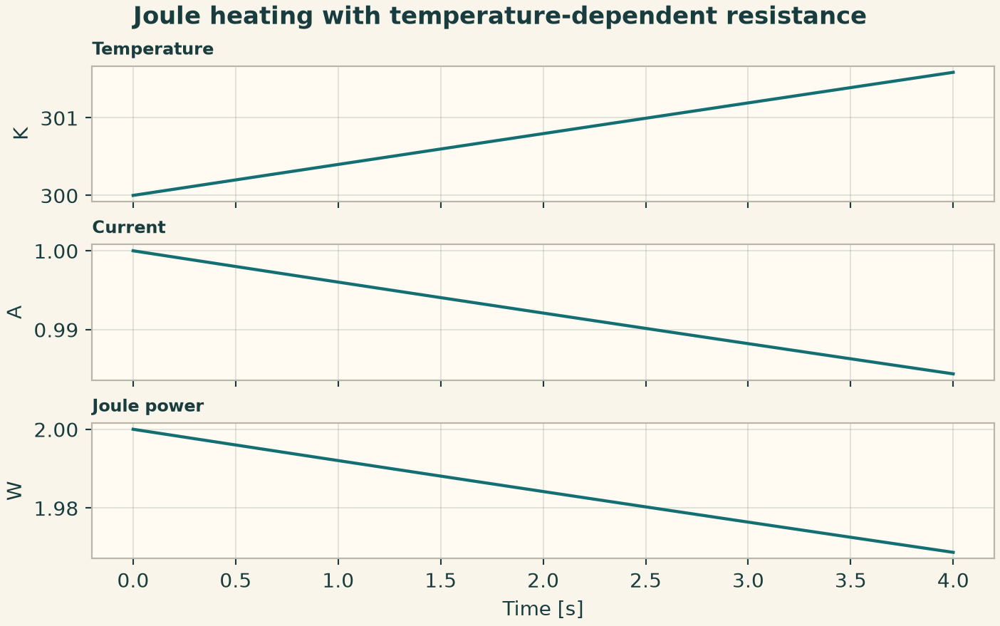
6.15.2 Spring-loaded piston with added fluid inertia
The liquid column contributes inertia to the piston balance. An initial displacement produces periodic motion and a changing interface pressure.
from onesim.physics.multiphysics import FluidColumnPiston
domain = LumpedDomain()
model = FluidColumnPiston(
domain=domain.system,
piston_mass=2,
fluid_density=1,
column_length=1,
area=1,
spring_stiffness=4,
)
t, data = history_case(
domain,
model,
dict(displacement=0.2, velocity=0.0),
("displacement", "interface_pressure", "stored_energy"),
end=4,
dt=0.02,
)
np.testing.assert_allclose(data["stored_energy"], data["stored_energy"][0], atol=1e-8)
fig = history_plot("Spring-loaded piston with added fluid inertia", model, t, data)
plt.show()
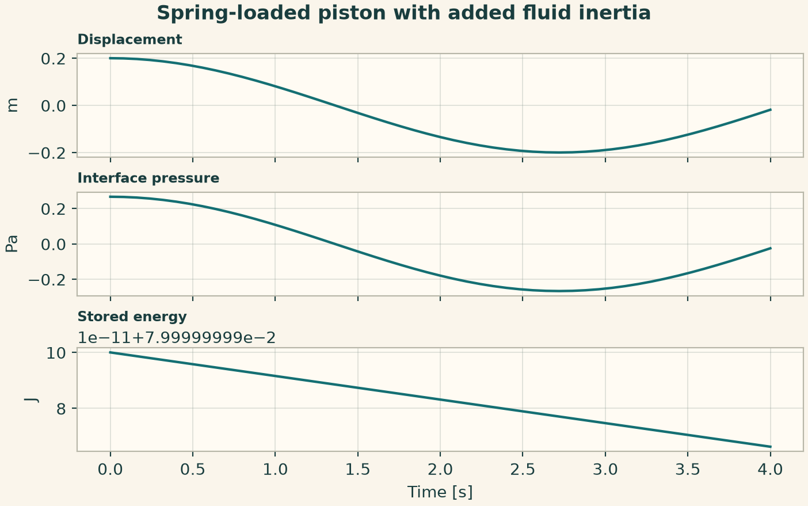
6.15.3 Voice-coil electromechanical transient
A voltage drives current and therefore force on a damped spring mass. Motion generates back EMF through the same force factor.
from onesim.physics.multiphysics import VoiceCoil
domain = LumpedDomain()
model = VoiceCoil(
domain=domain.system,
resistance=1,
inductance=1,
force_factor=0.5,
mass=2,
spring_stiffness=3,
damping=0.4,
applied_voltage=2,
)
t, data = history_case(
domain,
model,
dict(current=0.0, displacement=0.0, velocity=0.0),
("current", "displacement", "back_emf"),
end=4,
dt=0.02,
)
assert data["displacement"].max() > 0
fig = history_plot("Voice-coil electromechanical transient", model, t, data)
plt.show()
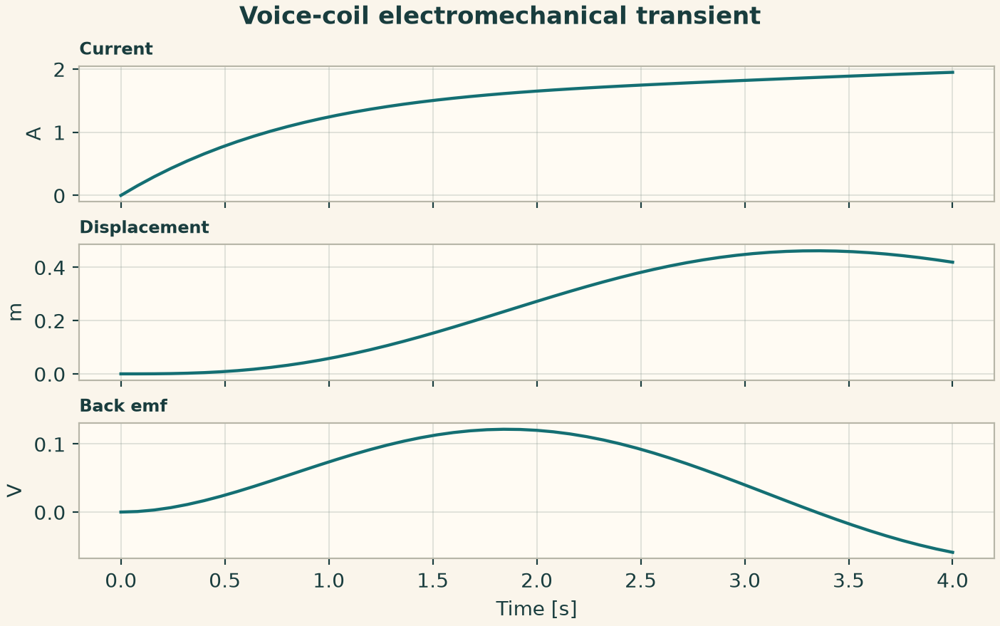
6.15.4 Heat transfer between two capacities
The conductance transfers energy from the hotter capacity to the cooler one. Check conservation by adding their stored thermal energies.
from onesim.physics.multiphysics import ThermalExchange
domain = LumpedDomain()
model = ThermalExchange(
domain=domain.system,
first_capacity=2,
second_capacity=3,
conductance=0.5,
)
t, data = history_case(
domain,
model,
dict(first_temperature=320.0, second_temperature=300.0),
("first_temperature", "second_temperature", "heat_flow"),
end=4,
dt=0.02,
)
np.testing.assert_allclose(
2 * data["first_temperature"] + 3 * data["second_temperature"], 1540.0, atol=1e-9
)
fig = history_plot("Heat transfer between two capacities", model, t, data)
plt.show()
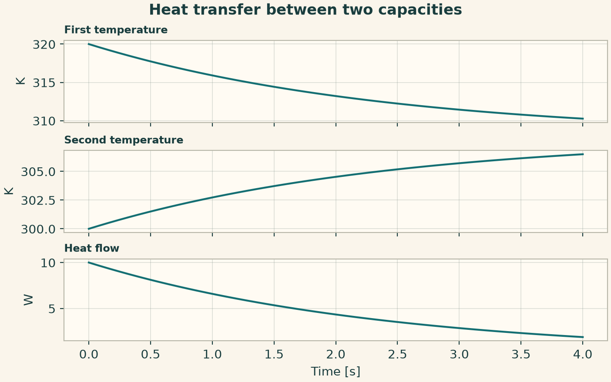
6.15.5 Heating from a homogeneous reaction
Combine a homogeneous reaction network and a temperature balance. This run specifies an independent volumetric heat source and a reaction with zero specified energy release, so the concentration sum and temperature rise have separate exact checks.
from onesim.physics.chemistry import ReactionIR, ReactionNetworkIR, SpeciesIR
from onesim.physics.multiphysics import AdiabaticReaction
domain = LumpedDomain()
species = tuple(
SpeciesIR(n, 0, 1.66054e-27, composition=(("H", 1),)) for n in ("A", "B")
)
reaction = ReactionIR(
"conversion", (("A", 1),), (("B", 1),), {"kind": "constant", "value": 0.3}
)
network = ReactionNetworkIR("reactive heating", "1", species, (reaction,))
model = AdiabaticReaction(
domain=domain.system,
network=network,
volumetric_heat_capacity=2.0,
thermal_source=0.4,
)
a, b = model.concentration("A").name, model.concentration("B").name
t, data = history_case(
domain,
model,
{a: 1.0, b: 0.0, "temperature": 300.0},
(a, b, "temperature"),
end=2,
dt=0.01,
)
np.testing.assert_allclose(data[a] + data[b], 1, atol=1e-12)
np.testing.assert_allclose(data["temperature"], 300 + 0.2 * t, atol=1e-9)
fig = history_plot("Reacting mixture with imposed heating", model, t, data)
plt.show()
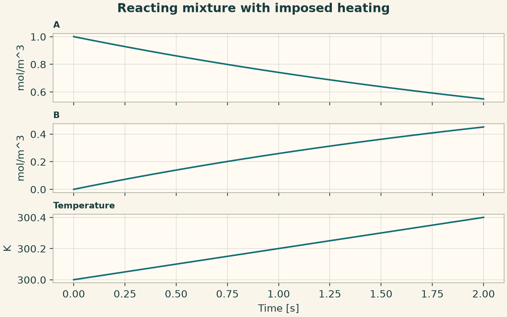
6.15.6 Electrothermal provider with Joule heat
The temperature-dependent conductivity changes the current density and Joule power in a prescribed electric field. Inspect the thermal and electrical outputs on the same coordinates.
from onesim.physics.multiphysics import (
ElectroThermalConfiguration,
ElectroThermalPublicApi,
)
n = 32
x0 = np.linspace(0, 1, n, endpoint=False)
wave = np.sin(2 * np.pi * x0)
configuration = ElectroThermalConfiguration(
parameters=dict(
cell_count=n,
final_time=0.01,
time_step=0.0001,
initial_temperature=300 + wave,
applied_electric_field=2,
conductivity_temperature_coefficient=0.02,
reference_temperature=300,
)
)
result = run_service(ElectroThermalPublicApi(), configuration)
fig = service_figure(
"Electrothermal provider with Joule heat",
result.coordinates,
"Provider coordinate [m]",
("Temperature [K]", result.temperature),
("Joule heat [W/m3]", result.joule_heat),
)
plt.show()
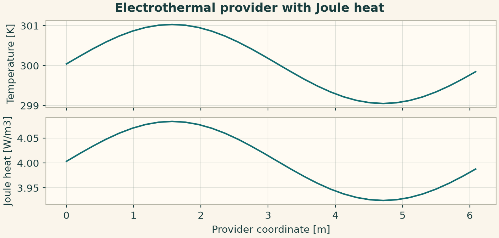
6.15.7 Reduced fluid–structure traction and displacement
Apply interface pressure and vary the initial fluid profile. The service returns traction and both sides of the interface response.
from onesim.physics.multiphysics import (
FluidStructureConfiguration,
FluidStructurePublicApi,
)
n = 32
x0 = np.linspace(0, 1, n, endpoint=False)
wave = np.sin(2 * np.pi * x0)
configuration = FluidStructureConfiguration(
parameters=dict(
cell_count=n,
final_time=0.01,
time_step=0.0001,
initial_fluid_velocity=0.1 * wave,
interface_pressure=0.1,
)
)
result = run_service(FluidStructurePublicApi(), configuration)
fig = service_figure(
"Reduced fluid--structure traction and displacement",
result.coordinates,
"Provider coordinate [m]",
("Fluid velocity [m/s]", result.fluid_velocity),
("Displacement [m]", result.structural_displacement),
("Interface traction [Pa]", result.interface_traction),
)
plt.show()
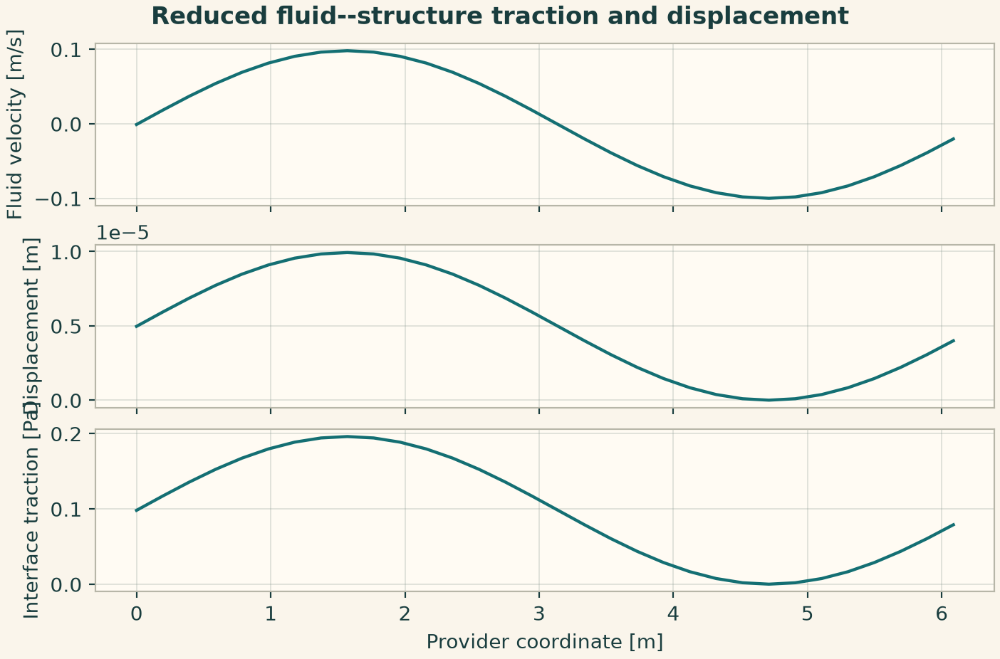
6.15.8 Magnetostrictive strain and mechanical response
Apply a magnetic field and set a magnetostriction coefficient. Read magnetic strain, resulting stress and displacement from the provider result.
from onesim.physics.multiphysics import (
MagnetoMechanicsConfiguration,
MagnetoMechanicsPublicApi,
)
n = 32
x0 = np.linspace(0, 1, n, endpoint=False)
wave = np.sin(2 * np.pi * x0)
configuration = MagnetoMechanicsConfiguration(
parameters=dict(
cell_count=n,
final_time=0.01,
time_step=0.0001,
initial_displacement=0.01 * wave,
applied_magnetic_field=0.5,
magnetostriction_coefficient=0.02,
)
)
result = run_service(MagnetoMechanicsPublicApi(), configuration)
fig = service_figure(
"Magnetostrictive strain and mechanical response",
result.coordinates,
"Provider coordinate [m]",
("Magnetic strain [1]", result.magnetic_strain),
("Stress [Pa]", result.stress),
("Displacement [m]", result.displacement),
)
plt.show()
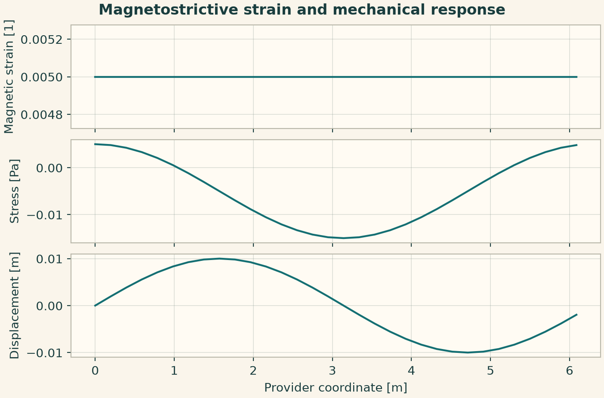
6.15.9 Reduced thermoelastic line coupling
A temperature perturbation produces thermal strain and mechanical stress through the material coefficient. Read the fields on the shared line carrier.
from onesim.physics.multiphysics import (
ThermoMechanicsConfiguration,
ThermoMechanicsPublicApi,
)
n = 32
x0 = np.linspace(0, 1, n, endpoint=False)
wave = np.sin(2 * np.pi * x0)
configuration = ThermoMechanicsConfiguration(
parameters=dict(
cell_count=n,
final_time=0.01,
time_step=0.0001,
initial_temperature=300 + wave,
reference_temperature=300,
thermal_expansion=0.01,
)
)
result = run_service(ThermoMechanicsPublicApi(), configuration)
fig = service_figure(
"Reduced thermoelastic line coupling",
result.coordinates,
"Provider coordinate [m]",
("Temperature [K]", result.temperature),
("Thermal strain [1]", result.thermal_strain),
("Stress [Pa]", result.stress),
)
plt.show()
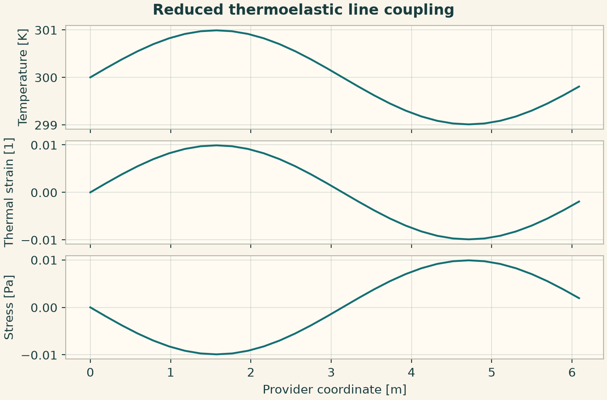
6.15.10 Monolithic versus partitioned linear exchange
Describe the block partition separately from its system matrix. The selected monolithic strategy integrates the two-state exchange and returns a derivative for each block.
from onesim.physics.multiphysics import (
GeneralCoupledSubsystemsConfiguration,
GeneralCoupledSubsystemsPublicApi,
)
settings = dict(
subsystem_ids=("a", "b"),
subsystem_sizes=(1, 1),
system_matrix=((-1.0, 1.0), (1.0, -1.0)),
initial_state=(1.0, 0.0),
final_time=0.1,
time_step=0.01,
)
result = run_service(
GeneralCoupledSubsystemsPublicApi(),
GeneralCoupledSubsystemsConfiguration(parameters=settings),
)
fig = service_figure(
"Monolithic versus partitioned linear exchange",
np.arange(2),
"Subsystem index",
("State [1]", result.state.values),
("Rate [1/s]", result.derivative),
)
plt.show()
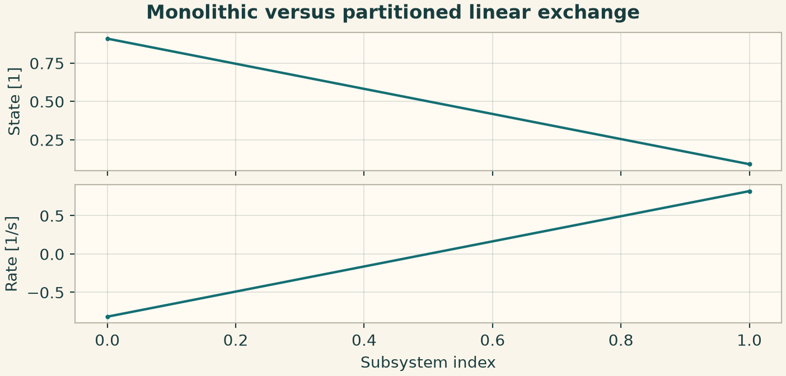
6.15.11 Reactive coupling facade with an explicit species registry
The facade requires a species set, reaction network, initial density arrays and initial temperature. Begin with zero reactions to isolate conservative diffusion. Add balanced reaction channels only after the transport check.
from onesim.physics.multiphysics import (
ReactiveCouplingConfiguration,
ReactiveCouplingPublicApi,
)
from onesim.physics.plasma.collisions.models.reactions import ReactionNetwork
from onesim.physics.plasma.fluid.models.declarations.species.species import (
SpeciesDefinition,
SpeciesSet,
)
n = 32
x0 = np.linspace(0, 1, n, endpoint=False)
species = SpeciesSet(
(SpeciesDefinition("A", "Tracer", charge_number=0, mass=1.66e-27),)
)
initial = 1e16 * (1 + 0.1 * np.cos(2 * np.pi * x0))
configuration = ReactiveCouplingConfiguration(
parameters=dict(
species=species,
reaction_network=ReactionNetwork(),
initial_densities={"A": initial},
initial_temperature=np.full(n, 300.0),
default_species_diffusivity=0.01,
thermal_diffusivity=0.02,
final_time=0.01,
time_step=0.0001,
)
)
result = run_service(ReactiveCouplingPublicApi(), configuration)
fig = service_figure(
"Conservative species transport",
result.coordinates,
"Coordinate [m]",
("Species A [m-3]", result.densities["A"]),
("Temperature [K]", result.temperature),
)
plt.show()
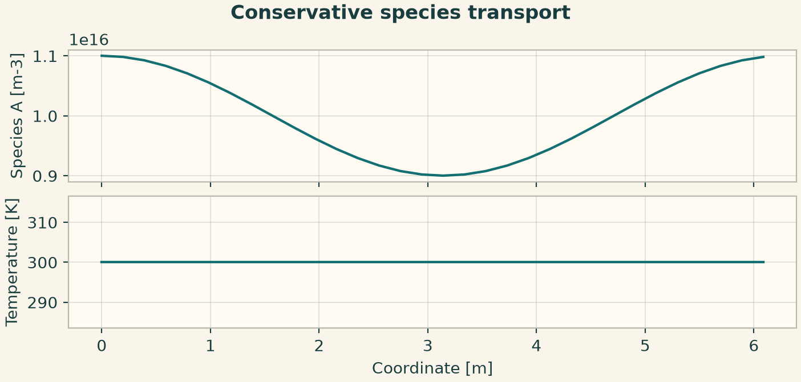